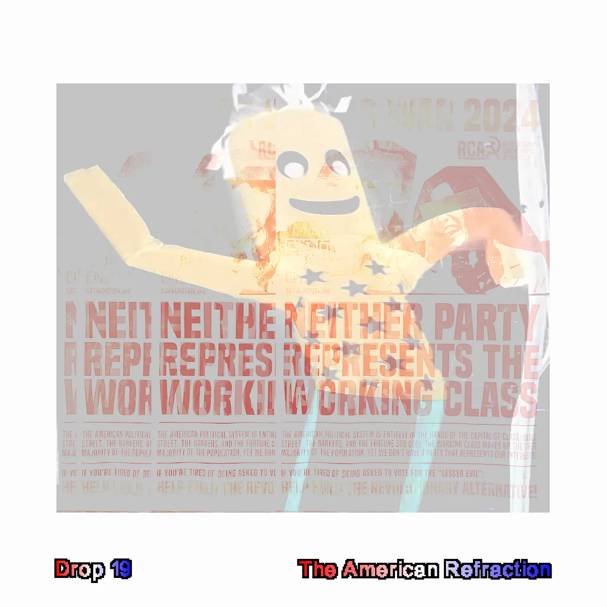
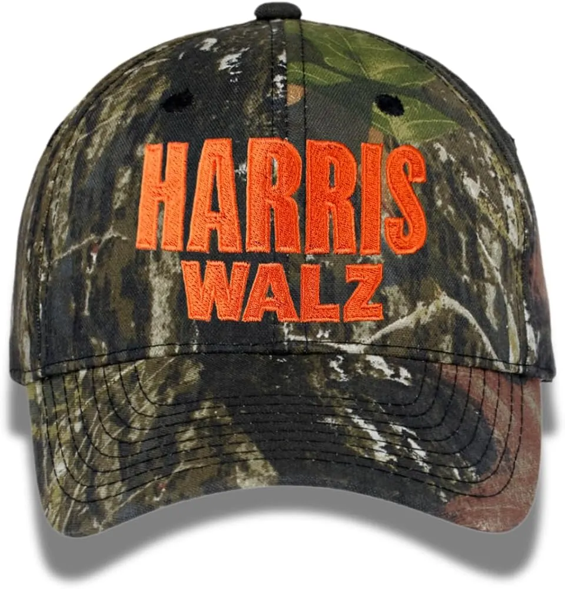
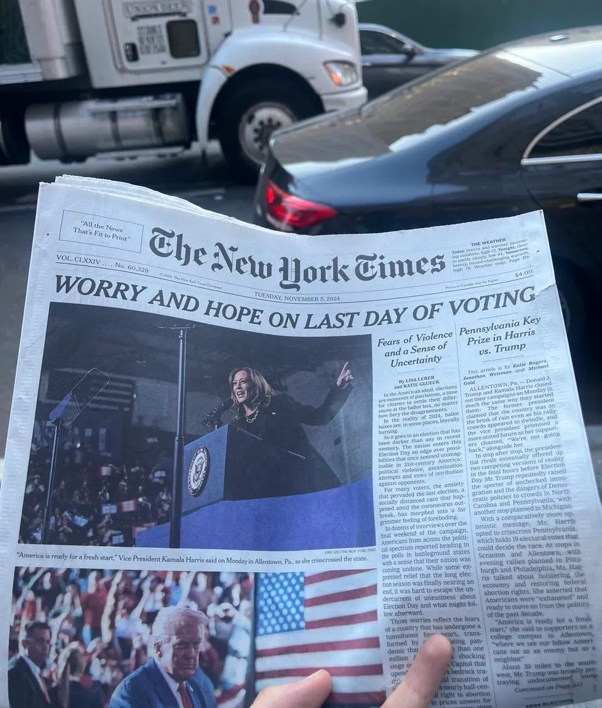
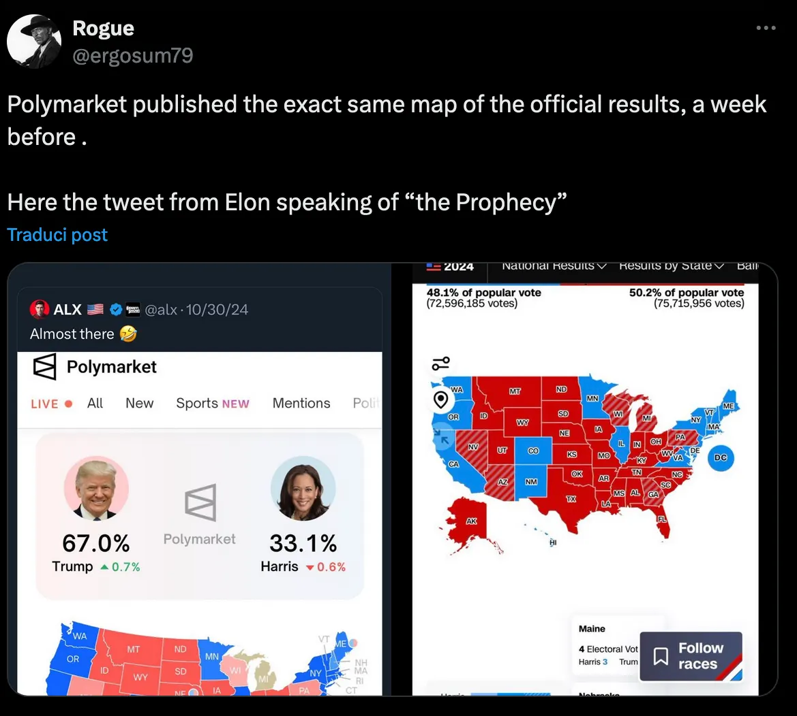
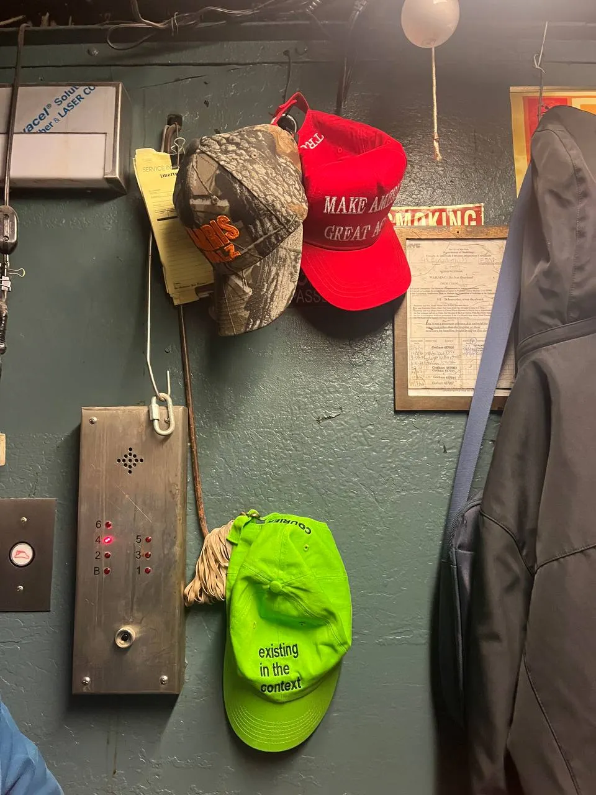
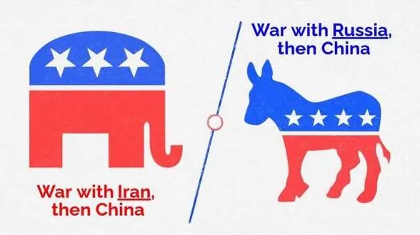
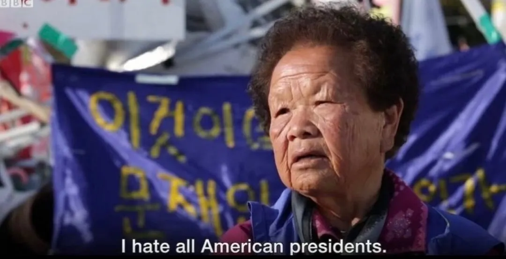

Drop #19 · November 18, 2024 · 9 min read
Hey everyone (▰˘◡˘▰)
Welcome back to Drops, REINCANTAMENTO’s newsletter. Alessandro happened to be in New York during the American electoral ritual. Today's DROP offers a ground-level view of this hyperreal moment of social shape-shifting. We hope you find something in these observations.
A reminder: REINCANTAMENTO is sustained by voluntary work. If you like what we do, consider donating or subscribing to support what we do!

refraction /rĭ-frăk′shən/nounThe turning or bending of any wave, such as a light or sound wave, when it passes from one medium into another of different optical density.
“The streets might go nuts if Trump wins”—I hear it from a white man in his forties as he lounges on a bench in Central Park, smoking a joint. It’s 10:25 on the fifth of November 2024. Polls for the 47th American Presidential election have just opened, and I’ve been in New York for barely over twenty-four hours.
The chant “Remember remember the fifth of November” crosses my mind, accompanied by flashes of Guy Fawkes masks. The movie V for Vendetta popularized, in a populist fashion, The Gunpowder Plot as an act of rebellion against the power. On this fifth of November, the political upheaval is incarnated in the body of a 78-year-old billionaire.
Observing the Empire's electoral pageantry from this vantage point is a surreal spectacle. It feels hyperreal—like being a roommate in the Big Brother house or the unwitting protagonist of The Truman Show. Jean Beaudrillard’s America opens up with “Caution: objects in this mirror may be closer than appear!”. I feel like I step on the other side of the mirror, where objects’ appearance is drastically altered.
Since I woke up, there's been a quiet anxiety thrumming beneath everything, a vague FOMO. I can’t shake the feeling that I should be at every corner, catching every piece of it.
While we work out in the park, the noise of sirens is all around, incessant. Maybe, probably, it’s always like this—the city that never sleeps, right?—but it can’t help but seem like an ominous sign for the rest of the day. Ghosts, images of other American days—January 6, 2021, more than any other—hover in the air, inevitably resurfacing in memory. What will the MAGA crowd do if they lose this election? Impossible not to ask, impossible not to think about it.
It’s unseasonably warm—an early spring morning, perhaps. Central Park stretches out lazily under a clear sky, spreading a gradient of colors from red to brown. Winter has never felt so far away as it does this year.
It’s 2 p.m. Manhattan doesn’t seem overly concerned about the most important election in the last thirty years. Life goes on, its routines flickering and bustling. You’re reminded it’s Election Day only by the passersby sporting “I Voted!” pins in stars-and-stripes colors. It’s not the only piece of election drip you see on New Yorkers as we breathe in the city on this Tuesday afternoon. There’s a Harris Waltz hat—orange font on green camo. Very trendy, definitely. A blue attempt to capture the iconic aura of the MAGA hat.

In Chelsea, a Trump supporter displays the full ensemble from hat to pin: a big “Pray to End Abortion” badge, a yellow ancap flag, and other symbols I can’t recognize. Politics as brand identity. A mosaic of causes that compose one's political persona. Variations on the Harris theme abound: Kamala in 1940s propaganda style “We Can Do It”, Harris in the Obama Hope design, Harris is “for the people”, etc.
Not far from where we’re walking, the tech workers at the New York Times are staging their first-ever picket. My friend Simone, who coordinates the Tech Worker Coalition in Berlin, had told me about it. The growing rhythm of the US labor struggle will continue no matter where the presidency goes, albeit with significantly different resonance. Around one year ago, Joe Biden was the first president to visit a similar picket, organized by the United Automobile Workers, targeting General Motors, Stellantis, and Ford.
A symbolic act, no doubt, but nevertheless historical—especially in a country where the political is primarily theatrical. In this light, both Biden and Trump have grasped that the presidency must increasingly act as a precarious bridge between the elites and the working class—two groups now separated by a widening chasm of inequality that defines American society. Harris's running mate, Tim Walz, moves in a similar direction, though Harris herself seems to float, Xanax-sedate, in a distant California-bred bubble of coastal self-satisfaction. Baudrillard again:
“Everything here is real and pragmatic, and yet it is all the stuff of dreams too”.
Strolling down from Chelsea to West Village, the electoral spectacle gets progressively inflated in the warm afternoon. A middle-aged Latina woman approaches, asking if we’ve voted, introducing herself as a Democratic candidate for New York City Civil Court. I ask her how she's feeling about today, and she responds positively, only to be interrupted by a volunteer who adds with knowing condescension: 'I mean, it's the Village'— invoking decades of reliable voting patterns and bohemian mythology. If they’re not voting for us in one of the most progressive neighborhoods in the country, a historic cradle of art and music, we’re in real trouble. When we explain that we are not citizens, she wishes that maybe one day our children will be able to vote in future elections. A well-meaning wish laced with a touch of arrogant inclusivity—exquisitely American. At the end of the day, the lawyer Crystal Villasenor—her name—will indeed claim a seat on the Civil Court, where everyday New Yorkers bring their landlord-tenant grievances and small claims in pursuit of justice.

Walking along the Hudson, I spot a jogger in what must be a fresh-off-the-press t-shirt: Trump's face with a pixelated "57%" in electric green. It's hawking Kalshi, the “first legal prediction market in the US”. I've been watching these betting platforms multiply this election season, from a niche crypto-powered service like Polymarket to the big sensation of these last few weeks. These markets attempt to harness online swarms’ sentiment, encouraging users to bet on their convictions and creating self-reinforcing cycles of prediction. A multiplayer make-your-own-poll game. In tune with the Zeitgeist.

As the polling stations close their doors, we make our way to Chinatown. After a delicious bowl of pulled noodles, we approach the election night event we randomly picked up from a list online.It's an old building in the area, perched on a strangely sloping street. The service elevator taking us to the venue is operated by an elderly Chinese man—probably one of the building's original residents—and it takes a full two minutes to to reach the sixth floor.

The event has a laid-back, hipster vibe—a gathering of the middle class more concerned with the proper mixing of their whiskey sours than the empire's fate. CNN's live stream projects onto the wall: we glance at it occasionally between sips of beer and scattered conversations. Only a small cadre of true believers is actually following the program. The real party, however, unfolds on the rooftop, where both a bar and television preside over a sweeping view of the Manhattan Bridge.
My impression, from early evening, is that while everyone keeps repeating Harris could win, no one really believes it. Trump is ahead practically from the start, and the gap will only widen.
The atmosphere lacks the electric charge I would have expected; New Yorkers seem to have steeled themselves for the tycoon's return. There won't likely be 2016-style tears this time—more of a grim resignation. Though the crowd clearly leans Democratic, we don't hear anyone waste breath on Harris's praises. Her campaign has appeared here as it did in Europe: a tired carnival bereft of ideas, an arrogant parade of establishment figures from Beyoncé to Dick Cheney, via the Obama royal couple. No one mentions Gaza.
Around 11 PM, our small group is joined by a well-informed journalist who immediately stands out as more engaged and prepared than the event's median attendee. She's already in mourning, and while quick to clarify that Harris could technically still win, she explains how the results thus far have been disappointing.
By midnight, though CNN has not yet conceded swing states to Trump, alcohol has become the consolation prize for the disappointed blue crowd. On another night of political defeat, March 4, 2018, I remember a leftist leader's iconic declaration: "no matter what, we'll keep drinking". On this Chinatown rooftop, everyone seems to concur.

Another, less fun, point of consensus is that Trump 2.0 will be far worse than his first mandate. He's no longer the trickster, the system's bug; this Trump is the battering ram of an establishment faction pushing for a reactionary involution of the Federal State. An internal realignment, a closing of ranks behind an octogenarian, foul-mouthed Bonaparte who seems to be the junction point between impoverished masses and global elites. A point of meta-stability that, despite its oscillations, appears to be the only possible equilibrium in this precarious phase.
At 2 AM, we moved from Chinatown to a bar in the East Village. At the entrance, a staff member is arguing about the election with someone passing by. The latter is playing it cool with the usual "nothing will really change" line, acting like everyone who's worried is just being dramatic.
The bar worker isn't having it. Without fancy words, he makes his point clear: the alliance forming behind Trump is genuinely concerning, marking a real shift toward something darker. His tone carries a strange comfort: aware of the gravity but neither desperate nor defeated. As this country - the world, really - veers towards fascism, I find hope in this stoicism. "Er bleibt stabil," as German leftists would say. Stay solid, feet on the ground. He seems to understand: tomorrow is when the real work begins. . It's in the day after that the true dynamics emerge when the actual terrain of struggle reveals itself. Once again: pessimism of the spirit, optimism of the will.

We come back home in an Uber, the night's electricity spent. The wave of American history has just been refracted once again. All its contradictions, all these plural voices have made the spectacle far more tangible than it appeared in the morning. Through each lens, the US is revealed in its kaleidoscopic reality, each shard reflecting a different truth of the empire's becoming. Baudrillard: "America is a giant hologram, in the sense that information concerning the whole is contained in each of its elements”. Can these fragments hold together peacefully in the years ahead? This question follows me into the night. Meanwhile, in my head, resonates still the New York Dolls' punk anthem from the bar's speakers: “All about that personality crisis, you got it while it was hot / But now, frustration and heartache is what you got”. The personality crisis just goes on.